Our photos have been organised into 9 main cathegories: Ninfa trip, bokeh technique,
panning technique, still life, portraits, long exposures, the nature, high speed
photography, backstage.
It is possible to view a section by selecting the slide and clicking the
button "Load section".


A tranquil river scene with its crystalline reflection. The majestic trees highlight a contrast between autumn and spring. A place full of history and cultural charm.


A stream with clear water, which is reflecting the lush vegetation of the spring flora. A peaceful corner with a green pond under a cool morning in the gardens of Ninfa.


A tree in full spring bloom, with delicated white and pink flowers which contrast the surrounding green colour. A dense bamboo forest towering towards the sky, a suggestive and peaceful corner of gardens of Ninfa.


A glass of liquor beside a piece of chocolate, immersed in an intimate atmosphere with bokeh lights that add magic to the composition. A bright setting captured with the bokeh technique, creating an ethernal and enchanting atmosphere.


 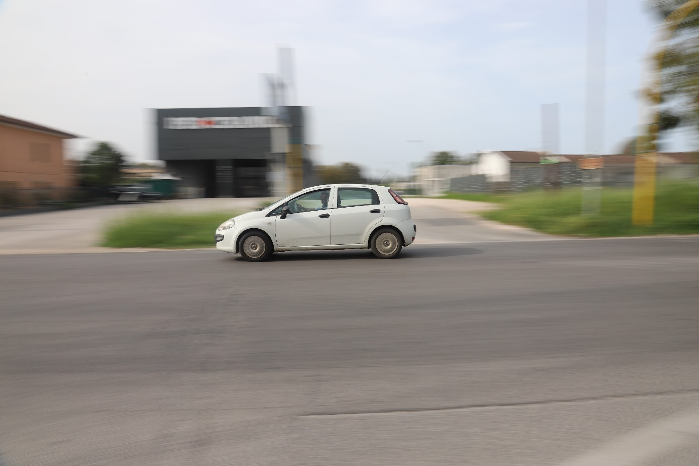
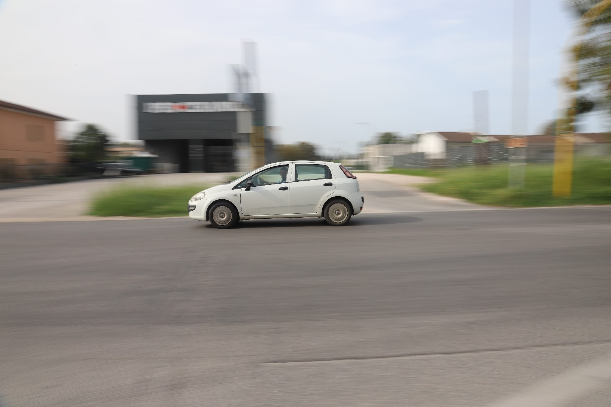
The bikers quickly move against the fading background of the school. The car passes through the crossroad, with the landscape quickly passing by.


Still life photos that capture the elegance of simplicity, with a ceramic teapot, decorative bags and green leaves. A touch of tradition is represented by the bottle of 'Vecchio Amaro del Capo', which is put in front of a delicate floral background. The soft light enhances details and creates an intimate and warm atmosphere.


Still life images that capture the essence of floral beauty. Because of the use of dramatic lighting and a dark background, the flowers stand out in all their vibrancy and delicacy. The still-life technique highlights the details and texture of each petal, creating a refined and contemplative atmosphere.


The comparison of the three models highlighted by the brightness of the bubbles.


The portrait "painted" on a bright mimosa tree.


 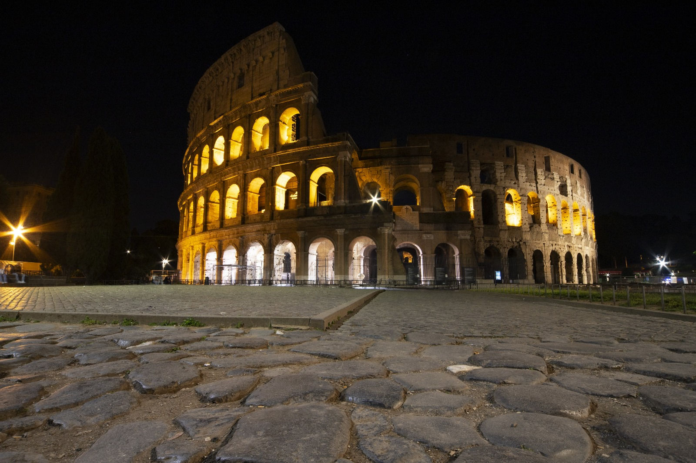
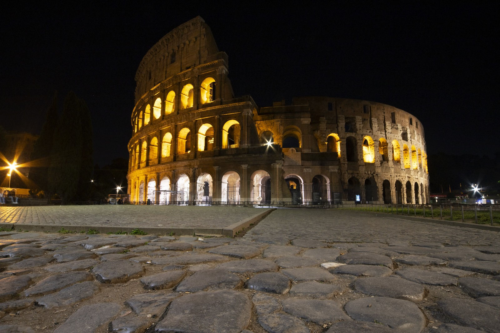

The grandeur and timeless beauty of historical monuments. Each shot highlights the extraordinary architecture and cultural importance of these buildings, which tell stories of bygone eras and enrich our heritage.


The calm water perfectly reflects the night sky, creating a double show of twinkling lights. A play of light and shadow where the infinity of the cosmos joins the serenity of the earth, offering a breathtaking view and a moment of pure natural magic.

A fascinating nocturnal panorama that reveals the mysterious beauty of the starry sky. The constellations sparkle like diamonds in the dark, offering a breathtaking spectacle and a moment of reflection beneath the infinity of the cosmos.


The vibrant beauty of these red plants, showing its intense shades and its elegant shape. Each shot highlights its vibrant presence, paying homage to the strength and vitality that these plants represent in the natural world.
 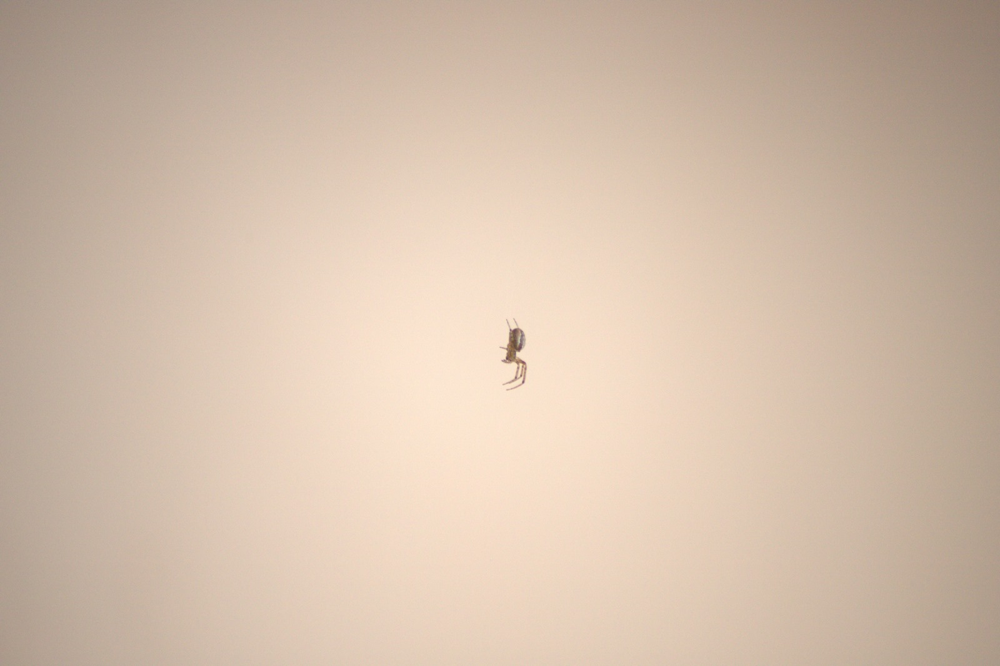
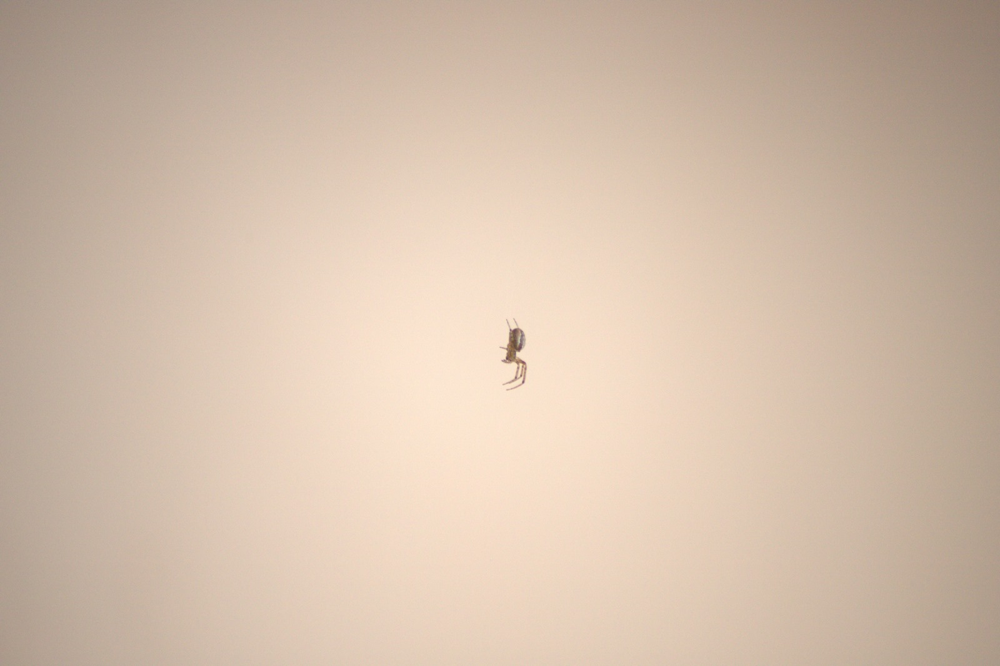

The uniqueness of each element of nature has a precious value. Whether it is the agility of a spider or the elegance of a poppy, nature always offers something that amazes.
 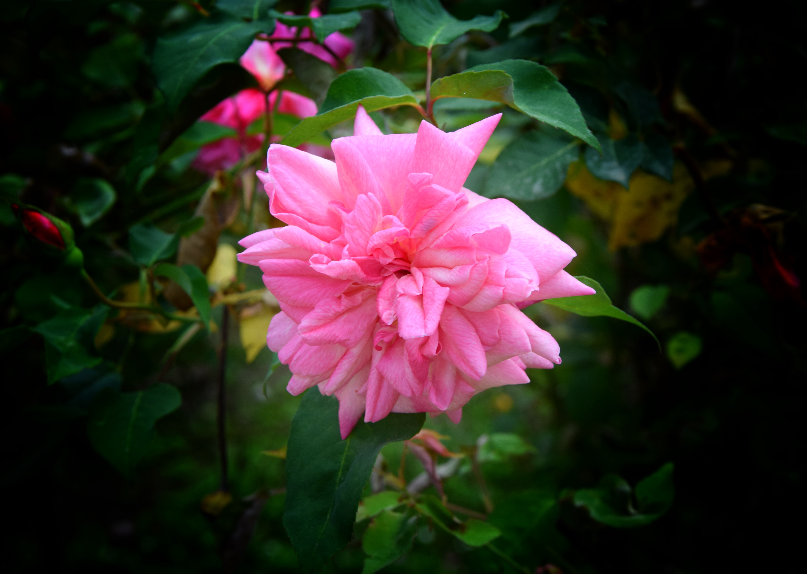
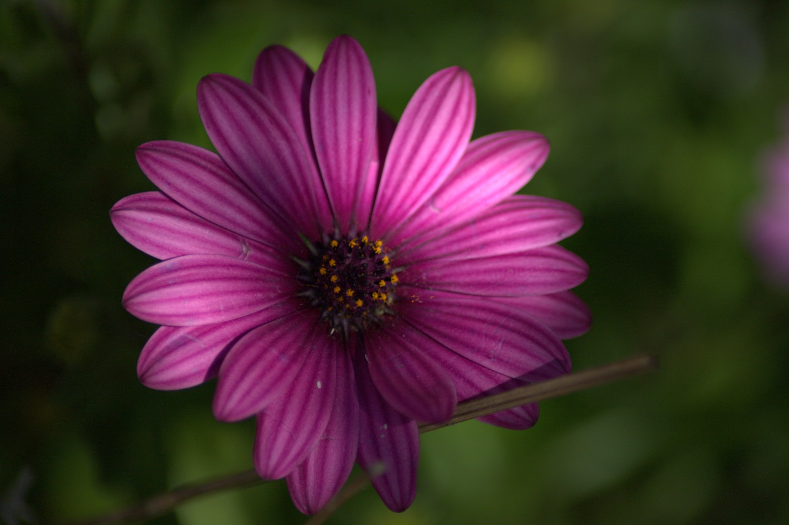
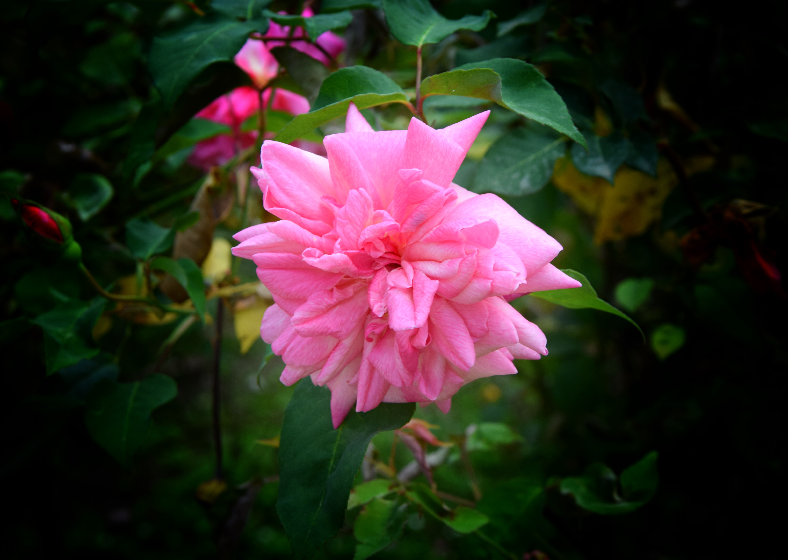
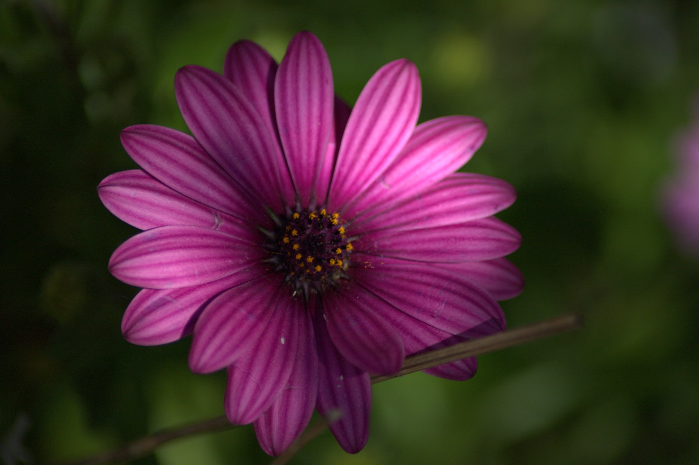
The delicacy of a pink flower is portrayed next to an insect resting on purple flowers. The combination of colors and the interaction between the flower and the insect celebrate the beauty and balance of the natural ecosystem, capturing a moment of pure serenity.


The tomatoes, frozen in water, with droplets dancing around them, captured in their dynamic beauty through high-speed photography.


The kiwis after the impact on the water, with their pulp and seeds that look like gems, frozen in a moment of dynamic impact.
 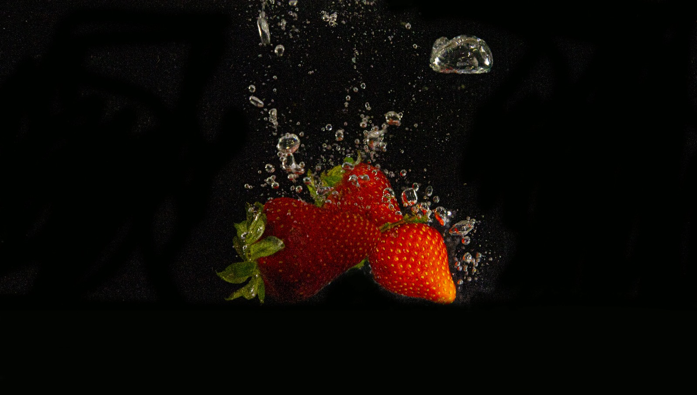
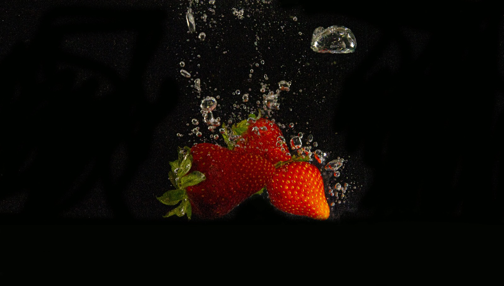

Three vibrant moments: fruit dipped in water, a sea of color and freshness that spread through the water in a kaleidoscope of sensations.


Photographers in action as they capture the ephemeral charm of soap bubbles, transforming the ordinary into the extraordinary through the lens of their creativity.


Preparing to capture the explosive action of the fruit diving into the water, ready to immortalize the fleeting moment with the high-speed technique. Refinements of the model's positions for the perfect shot.


Looking for the perfect position for a group shot, trying to capture the fleeting moment. Choosing the ideal photo often requires a lot of time and effort.